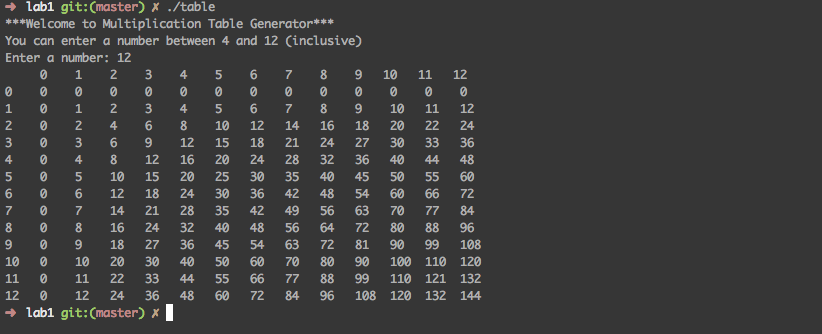
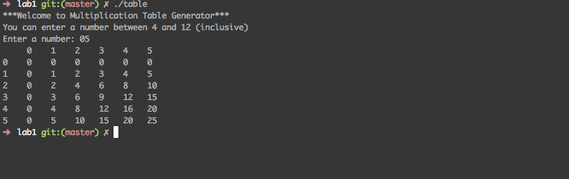

Assignment 1
Log
Mon Oct 9 18:41:13 -0700 2011
- Created the structure of the program. For example the function names and the order they are called in.
- Implemented the range of numbers to be entered. Only 4-12 inclusive can be entered. If the number is not in range, an error is thrown out.
- Two for loops are used to print the multiplication table.
Tue Oct 11 19:50:35 -0700 2011
- Added error handling for invalid input such as character
- Improved formatting for output
- Screen shots of i/o are taken
#TODO
- Format the output to look like a table
- Check for input other than numbers/Handle input other than numbers
- Properly format numbers that have two digits
- upload lab to d2l
#Known Issues/Limitations
- When entering a number that is two digits, two digit numbers in the top (header row) will not align with rest of output (see below). One idea for a fix is to print the header row in the first for loop

- If the user were to enter a 0 followed by any valid number (between 4-12 inclusive) the program (C++) ignores the leading 0 (see below). This might be confusing to some users.

#Algorithm
num = USER_INPUT
i = 0
n = 0
for i <= num; i++
print i
for n <=num; n++
print n*i
end
end